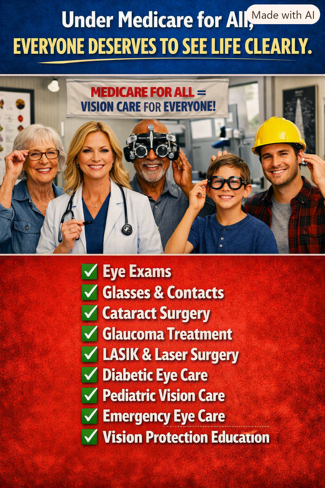

Article 36: Everyone Deserves to See Life Clearly
Why vision care belongs in universal healthcare

Download illustrated Word document (.docx)
Why comprehensive vision care belongs in Medicare for All
By Willis Butts | Medicare for All
Illustration supplied for Article 36. Benefits shown represent a vision for comprehensive coverage, not a description of current Medicare or a guarantee of every proposed benefit.
Seeing clearly should not depend on your bank account
Imagine being told that you need new glasses to read your prescriptions, drive safely, or do your job—but that the exam and lenses will have to wait until the next paycheck. Or imagine a parent putting off a child’s eye examination because the family cannot afford another bill. Vision care is not an optional extra. It affects learning, work, mobility, independence, and everyday safety.
Medicare for All offers an opportunity to design healthcare around the whole person. If we are serious about universal healthcare, we cannot treat eyes as though they are separate from the rest of the body. An affordable system should make routine vision services and medically necessary eye treatment accessible without a financial barrier at the point of care.
The gap in today’s Medicare
Original Medicare generally does not cover routine eye examinations for eyeglass prescriptions or ordinary eyeglasses and contact lenses. It does cover certain medically necessary eye services and tests, including qualifying glaucoma screening, diabetic eye exams, cataract surgery, and corrective lenses following cataract surgery under applicable rules. Medicare Advantage plans may offer additional routine vision benefits, but coverage, networks, allowances, and out-of-pocket costs vary by plan.
That patchwork is a poor foundation for a basic human need. A person may have insurance and still discover that the particular examination, lenses, or specialist they need are not affordable.
What comprehensive vision coverage should include
Routine eye exams: Regular eye examinations, prescriptions, and appropriate follow-up should be available for children, working adults, and older people.
Glasses and contact lenses: Medically appropriate corrective lenses and replacements should not be financially out of reach.
Eye disease diagnosis and treatment: Cataracts, glaucoma, diabetic retinopathy, infections, injuries, and other eye conditions require timely professional care.
Pediatric and emergency services: Children need early detection of vision problems; everyone needs prompt care for sudden changes in vision and eye emergencies.
Prevention can protect both sight and resources
An eye examination can reveal conditions before they become severe. Early diagnosis and treatment can help prevent avoidable vision loss, reduce complications, and protect people’s ability to live and work independently. Some eye problems are also associated with systemic diseases such as diabetes and high blood pressure. Better access is both a matter of dignity and a practical investment in health.
A sensible distinction: necessary care and elective procedures
The accompanying illustration includes LASIK and other laser procedures. That does not mean every elective vision-correction surgery would automatically be covered under Medicare for All. Coverage would depend on the law’s definition of medically necessary services, benefit standards, and clinical guidance. A comprehensive proposal should clearly protect essential eye treatment while openly debating how to handle elective procedures.
Removing the barriers
Under a well-designed Medicare for All program, patients could receive covered eye care without premiums, deductibles, or copayments at the point of service. Public financing would replace many of today’s fragmented insurance payment arrangements. The details would matter: provider participation, appointment availability, reimbursement, equipment standards, and adequate access in rural and underserved communities would all need attention.
Universal coverage does not make eye doctors, lenses, surgeries, or clinics free to produce. It changes how we pay for them, pooling the cost across society instead of placing unpredictable bills on the individual who happens to need care.
What this means for real people
For a child, it means seeing the classroom board clearly. For a worker, it means reading instructions and operating safely. For an older adult, it means recognizing faces, navigating the neighborhood, and retaining independence. For someone with diabetes, it means receiving monitoring that may preserve their sight. These are not luxuries. They are everyday necessities.
A healthcare system worthy of the name
The promise of Medicare for All should be simple: when a person needs healthcare, the first question is what treatment will help—not whether they can afford to ask. That principle must include eyes, teeth, ears, prescriptions, hospital care, and the many other services that make a healthy life possible.
Everyone deserves to see life clearly. Our healthcare system should help make that possible.
Editorial note: This article advocates a proposed comprehensive universal healthcare program. The scope of covered vision services, including elective laser vision correction, would depend on enacted legislation and implementing rules.